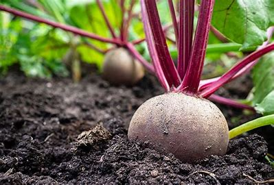

Beetroot prefer to be grown in moist, fertile soil in a sunny spot, but will also thrive in raised beds or pots. Although early sowings can be made from late winter, raising plants can be tricky, so for foolproof beetroot, sow seeds directly into the soil from mid-spring.
